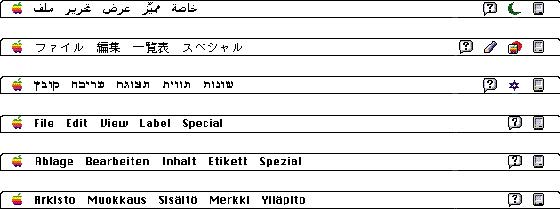

|
Language DifferencesTranslating text is a delicate task and can often cause confusion, so be waryof using colloquial phrases or nonstandard usage and syntax. Carefully choose your words for command names in menus and for messages in dialog boxes, alert boxes, and help balloons. When translated, text can become up to 50 percent larger than U.S. English text. Text needs room to grow up, down, and sideways. Figure 2-1 shows Finder menu bars in several languages. Compare the different lengths of the menu titles that have the same meaning. Figure 2-1 Menu bars in different languages  Potential grammar problems may arise with error messages
and the user programming structure of languages such as
HyperTalk. Use complete sentences whenever possible. Don't
use phrases that you then concatenate |